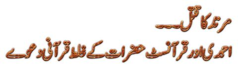

")
مسلمانوں کا 1400 سالوں سے قرآن اور حدیث اور سیرت صحابہ کی روشنی میں "اجماع" رہا کہ جو دین بدل کر مرتد ہو جائے، اسکی سزا قتل ہے۔
آج کی مہذب دنیا میں یہ ظالمانہ حکم اسلام کے منہ پر بدنما دھبہ بن گیا۔ اور اب 1400 سال کے بعد احمدی حضرات اور قرآنسٹ حضرات اور چند دیگر اسلام کے جدید عذر خواہ مختلف بہانے بنا کر کوشش کر رہے ہیں کہ اسلام پر سے یہ دھبہ دھویا جائے۔
اس ضمن میں محترمہ ثمر صاحبہ نے احمدی حضرات مرزا طاہر احمد اور مولانا شیر علی کی کتب سے یہ دلائل جمع کر پیش کیے۔
ذیل میں ان دلائل کا تجزیہ پیش کیا جا رہا ہے۔
٭٭٭ مسئلہ: قرآن کے نام پر "صحیح" روایات کو ماننے سے انکار ٭٭٭
مرتد کے قتل کے حوالے سے بہت سی "صحیح" روایات موجود ہیں (جنہیں مضمون کے آخر میں پیش کیا جائے گا)۔ لیکن احمدی حضرات نے انہیں یہ کہہ کر ماننے سے انکار کر دیا کہ وہ قرآن کی ان آیات کے مخالف ہیں جہاں اللہ کہہ رہا ہے کہ ہر ایک کی اپنی مرضی ہے کہ وہ اسلام قبول کرتا ہے یا نہیں۔
قرآنسٹ حضرات بھی انہی قرآنی آیات کا ڈھنڈورا پیٹ کر مرتد کی سزا قتل کا انکار کرتے ہیں۔
چنانچہ آئیے پہلے ان قرآنی آیات کی حقیقت کو سمجھتے ہیں اور ضمن میں احمدی حضرات کی طرف سے جو "دھوکہ دھی" کی جا رہی ہے، اس پر سے بھی پردہ ہٹاتے ہیں۔
٭٭٭ احمدی/قرآنسٹ حضرات کی طرف سے پیشکردہ قرآنی آیات ٭٭٭
اس ضمن میں انکی طرف سے ذیل کی آیات پیش کی جاتی ہیں:
پہلی آیت:
دیکھو تمہارے رب کی طرف سے حق آچکا ہے اب ہر شخص کا اختیار ہے چاہے تو ایمان لائے اور چاہے تو کفر اختیار کرے ۔ الکہف 30
دوسری آیت:
دیکھو دین کے معاملے میں کسی قسم کا جبر جائز نہیں اور اس کی ضرورت ہی نہیں ۔ کیوں ؟ اس لئے کہ ہدایت اور گمراہی کا فرق خوب ظاہر ہوچکا ہے ۔البقرہ257
تیسری آیت:
تم اللہ کی بھی اطاعت کرو اور رسول کی بھی اطاعت کرو اور ہوشیار رہو اگر اس کے باوجود بھی تم پھر گئے تو جان لو کہ ہمارے رسول کے ذمہ تو صرف کھول کر بات پہنچا دینا ہے ۔ سورۃ المائدہ 93
ان تینوں آیات کی اصل حقیقت یہ ہے کہ:
(1) پہلی بات یہ ہے کہ ان آیات میں "ارتداد" کا کہیں دور دور تک ذکر موجود نہیں ہے۔ بلکہ یہ تو فقط کفار کے اسلام قبول کرنے کی بات کر رہی ہیں کہ انہیں مجبور نہ کیا جائے کہ وہ زبردستی اسلام قبول کریں۔
جبکہ ارتداد یہ ہے کہ اسلام قبول کرنے کے بعد دوبارہ مسلمان سے غیر مسلم ہو جانا۔
(2) اور اس سے بھی اہم بات یہ ہے کہ یہ آیات "منسوخ" ہیں۔ بعد میں اسی قرآن میں کفار کو بھی "زبردستی" اسلام میں داخل کرنے کا حکم نازل ہوا۔ اور اگر وہ اسلام قبول نہیں کرتے، تو پھر انہیں قتل کر دینے کا حکم نازل ہوا۔
(3) نوٹ کریں کہ سورۃ بقرہ اور کہف مکہ میں نازل ہوئیں، جبکہ تیسری آیت مائدہ کی ہے جسکا کوئی تعلق ہی موضوع دے نہیں بن رہا ہے کیونکہ وہ نہ ارتداد کے متعلق ہے اور نہ ہی زبردستی اسلام قبول کروانے کے متعلق۔ مزید یہ کہ یہ آیت بھی مدینہ میں سن 6 ہجری میں حدیبیہ کے وقت نازل ہوئی، جبکہ انہیں منسوخ کرنے والی آیات سن 9 ہجری میں نازل ہوئیں۔
مسلمان (بشمول احمدی حضرات) یہ سچائی بیان نہیں کرتے کہ پیغمبر اسلام اور قرآن کے سٹینڈرڈز دو رخے رہے ہیں۔ مکہ اور مدینہ کے ابتدائی سالوں میں جبتک مسلمان کمزور تھے، اس وقت تک قرآن میں مصالحت کی آیات نازل ہوتی رہیں۔ اور جب مدینہ کے آخری دور میں مسلمانوں کو فیصلہ کن برتری حاصل ہو گئی تو قرآن نے کروٹ بدل لی اور کفار کے متعلق شدید سخت اور انکے قتل کی آیات نازل ہونا شروع ہو گئیں۔
٭٭٭ فائنل قرآنی آیات جو کفار کے اسلام قبول نہ کرنے پر انکے قتل کا حکم دے رہی ہیں٭٭٭
سن 8 ہجری میں مکہ فتح ہو چکا تھا۔ اور سن 9 ہجری تک مسلمان عرب میں فیصلہ کن برتری حاصل کر چکے تھے۔ اس موقع پر قرآن نے کفار کو 4 ماہ کی مہلت دی کہ وہ یا تو اسلام قبول کر لیں، وگرنہ انہیں قتل کر دیا جائے گا۔
فَاِذَا انْسَلَخَ الْاَشْھُرُ الْحُرُمُ فَاقْتُلُوا الْمُشْرِکِیْنَ حَیْثُ وَجَدْتُّمُوْھُمْ وَخُذُوْھُمْ وَاحْصُرُوْھُمْ وَاقْعُدُوْا لَھُمْ کُلَّ مَرْصَدٍ. فَاِنْ تَابُوْا وَاَقَامُوا الصَّلٰوۃَ وَاٰتَوُا الزَّکٰوۃَ فَخَلُّوْا سَبِیْلَھُمْ، اِنَّ اللّٰہَ غَفُوْرٌ رَّحِیْمٌ. (التوبہ ۹: ۵)
ترجمہ:
’’پھر جب (4 ماہ بعد) حرام مہینے گزر جائیں تو اِن مشرکین کو جہاں پاؤ، قتل کر دو اور اِس کے لیے اُن کو پکڑو، گھیرو اور ہرگھات میں اُن کے لیے تاک لگاؤ ، لیکن وہ اگر کفر و شرک سے توبہ کر لیں (اور مسلمان ہو جائیں) اور نماز کا اہتمام کریں اور زکوٰۃ ادا کرنے لگیں تو اُنھیں چھوڑ دو۔ ‘‘
یہی قانون ہے جس کی وضاحت پیغمبر نے اِس طرح کی:
امرت ان اقاتل الناس حتی یشھدوا ان لا الہ الا اللّٰہ وان محمدًا رسول اللّٰہ ویقیموا الصلٰوۃ ویؤتوا الزکٰوۃ فاذا فعلوا عصموا منی دماء ھم واموالھم الا بحقھا وحسابھم علی اللّٰہ. (مسلم ، رقم ۱۲۹)
’’مجھے حکم دیا گیا ہے کہ میں اُن لوگوں سے جنگ کروں، یہاں تک کہ وہ لا الٰہ الا اللہ محمد رسول اللہ کی شہادت دیں، نماز کا اہتمام کریں اور زکوٰۃ ادا کریں۔ وہ یہ شرائط تسلیم کر لیں تو اُن کی جانیں محفوظ ہو جائیں گی، الاّ یہ کہ وہ اسلام کے کسی حق کے تحت اِس حفاظت سے محروم کر دیے جائیں ۔ رہا باطن کا حساب تو وہ اللہ کے ذمہ ہے۔‘‘
اور اہل کتاب کو اگرچہ کہ جزیہ دے کر جان بچانے کی سہولت دی گئی، لیکن اسکے پیچھے بھی یہی حکمت کارفرما تھی کہ ایک دن وہ اپنی تذلیل اور تحقیر اور جزیے کی رقم سے تنگ آ کر اسلام قبول کر لیں۔ چنانچہ یہ بھی طاقت کے زور پر ہی اسلام قبول کروانا ہے۔
قَاتِلُوا الَّذِیْنَ لاَ یُؤْمِنُوْنَ بِاللّٰہِ وَلاَ بِالْیَوْمِ الْاٰخِرِ وَلاَ یُحَرِّمُوْنَ مَا حَرَّمَ اللّٰہُ وَرَسُوْلُہٗ وَلاَ یَدِیْنُوْنَ دِیْنَ الْحَقِّ مِنَ الَّذِیْنَ اُوْتُوا الْکِتٰبَ حَتّٰی یُعْطُوا الْجِزْیَۃَ عَنْ یَّدٍ وَّھُمْ صٰغِرُوْنَ. (۹ : ۲۹)
’’ اُن اہل کتاب سے لڑوجو نہ اللہ اور روز آخرت پر ایمان لاتے ہیں، نہ اللہ اور اُس کے رسول نے جو کچھ حرام ٹھیرایا ہے، اُسے حرام ٹھیراتے ہیں اور نہ دین حق کی پیروی کرتے ہیں۔ اُن سے لڑو، یہاں تک کہ وہ مغلوب ہو کر جزیہ ادا کریں اور زیر دست بن کر رہیں۔ ‘‘
یہاں اہل کتاب سے لڑنے کا حکم کسی بدعہدی کی وجہ سے نہیں ہے، بلکہ صاف صاف دین حق (اسلام) قبول نہ کرنے کی وجہ سے ہے۔ یاد رہے یہ سورۃ توبہ کی ہی آیت ہے اور سن 9 میں ہی نازل ہوئی ہے۔
چنانچہ احمدی اور قرآنسٹ حضرات کا مسئلہ یہ ہے کہ وہ اپنے مطلب کی پرانی مکی زمانے کی قرآنی آیات بیان کرتے ہیں جو کہ منسوخ ہو چکی ہیں ۔۔۔ اور قرآن کی ان آیتوں کو چھپاتے ہیں جو کہ فائنل حکم کا درجہ رکھتی ہیں اور کفار کو مجبور کرتی ہیں کہ یا تو اسلام قبول کرو ورنہ قتل کر دیے جاؤ گے۔ اسی طرح اہل کتاب کو مجبور کرتی ہیں کہ یا تو جزیہ ادا کر کے تذلیل و تحقیر کے ساتھ رہو، اور اس سے بچنا ہے تو مسلمان ہو جاؤ۔
٭٭٭ مرتد کے قتل پر چند "صحیح" روایات ٭٭٭
روایات کے حوالے سے بھی احمدی حضرات "ڈنڈی مارنے" کی مرتکب ہیں۔ انکی تحریروں میں کبھی "ساری" روایات پیش نہیں کی جاتیں، بلکہ وہ دو چار روایات پیش کر کے اس پر تنقید کر کے یہ تاثر دیتے ہیں جیسے کہ یہ ہی ساری روایات ہیں۔
ذیل میں چند روایات پیش کی جا رہی ہیں، جس کو وہ قرآنی کی فائنل آیات کی طرح ہی چھپا جاتے ہیں:
سورس:
http://www.fikrokhabar.com/index.php/enlightenment-news-article/item/8293-murtad-ki-saza-quraan-o-hadees-ki-roshni-me
* حضرت عبداللہ بن عباس رضی اللہ عنہما سے روایت ہے کہ حضور اکرم ﷺ نے ارشاد فرمایا: مَنْ بَدَّلَ دِےْنَہُ فَاقْتُلُوْہُ جس نے اپنا دین (اسلام) بدل دیا تو اس کو قتل کردو۔ (صحیح بخاری، ترمذی، ابوداود، ابن ماجہ، مسند احمد)
نوٹ:
احمدی حضرات کہتے ہیں کہ یہ روایت ابن عباس کے غلام عکرمہ سے نقل ہوئی ہے جو کہ ضعیف ہے۔ چلیں انکی بات مان لیتے ہیں کیونکہ مسلمانوں کا علم حدیث اور علم رجال ایک مذاق ہے۔ آدھے علماء نے عکرمہ کو ضعیف کہا ہے تو بقیہ آدھے علماء نے ثقہ۔ آدھے علماء ایک حدیث کو صحیح کہہ رہے ہوتے ہیں تو آدھے غلط۔ صرف قرآنی آیات کو ہی نہیں، بلکہ حدیث کو بھی جس کا جیسے جی چاہتا ہے ویسے ہی توڑ مڑوڑ کر نتیجہ نکال لیتا ہے۔
* حضرت زید بن اسلم رضی اللہ عنہ سے روایت ہے کہ حضور اکرم ﷺ نے ارشاد فرمایا: مَنْ غَیَّرَ دِےْنَہُ فَاضْرِبُوا عُنُقَہُ جس نے اپنا دین (اسلام) بدل دیا تو اس کی گردن کو اڑادو۔ (موطا مالک)
اس روایت کے متعلق احمدی حضرات کی طرف سے کوئی تبصرہ نہیں آیا۔
* حضرت ابوموسیٰ اشعری رضی اللہ عنہ کو حضور اکرم ﷺ نے یمن کے ایک صوبے کا گورنر بناکر بھیجا جبکہ حضرت معاذ رضی اللہ عنہ کو ان کے بعد دوسرے صوبے کا گورنر بناکر بھیجا ۔حضرت معاذ رضی اللہ عنہ حضرت ابوموسیٰ اشعری رضی اللہ عنہ سے ملاقات کے لئے گئے، حضرت ابوموسیٰ اشعری رضی اللہ عنہ نے اکرام ضیف کے لئے حضرت معاذ رضی اللہ عنہ کے لئے تکیہ ڈالا اور حضرت معاذ رضی اللہ عنہ ابھی سوار تھے کہ انہوں نے حضرت ابوموسیٰ رضی اللہ عنہ کے پاس ایک شخص بندھا ہوا دیکھا۔ پوچھا یہ کون ہے؟ حضرت ابوموسیٰ اشعری رضی اللہ عنہ نے فرمایا کہ یہ پہلے یہودی تھا پھر مسلمان ہوا، اس کے بعد پھر یہودی ہوگیا۔ حضرت ابوموسیٰ اشعری رضی اللہ عنہ نے کہا اے معاذ! بیٹھ جاؤ۔ حضرت معاذ رضی اللہ عنہ نے فرمایا کہ جب تک اس کو قتل نہیں کیا جائے گا، میں نہیں بیٹھوں گا۔ اللہ تعالیٰ اور اس کے رسول کا یہی فیصلہ ہے۔ تین دفعہ حضرت معاذ رضی اللہ عنہ نے یہی فرمایا۔ پھر اس مرتد کے بارے میں قتل کا حکم دیا گیا اور وہ قتل کردیا گیا۔ (صحیح بخاری، صحیح مسلم)
اس روایت پر بھی احمدی حضرات کی طرف سے براہ راست کوئی تبصرہ نہیں آیا۔
* حضرت عبد اللہ بن مسعود رضی اللہ عنہ روایت کرتے ہیں کہ حضور اکرم ﷺ نے ارشاد فرمایا کہ کسی مسلمان کا جو اس بات کی گواہی دیتا ہوکہ اللہ تعالیٰ کے علاوہ کوئی معبود نہیں اور میں اللہ کا رسول ہوں، خون بہانا جائز نہیں مگر تین چیزوں میں سے کسی ایک کے ارتکاب پر۔ ۱) شادی شدہ ہونے کے بعد زنا کرے۔ ۲) کسی کو قتل کردے تو اس کے قصاص میں قتل کیا جائے گا۔ ۳) اپنے دین اسلام کو چھوڑکر ملت سے خارج ہوجائے تو قتل کیا جائے گا۔ (صحیح بخاری وصحیح مسلم، ابوداود، ابن ماجہ، مسند احمد)
ایک بار پھر، احمدی حضرات کی طرف سے اس حدیث پر کوئی تبصرہ نہیں آیا۔
* حضرت عثمان بن عفان رضی اللہ عنہ سے روایت ہے کہ میں نے حضور اکرم ﷺ کو یہ ارشاد فرماتے ہوئے سنا، آپ ﷺ نے فرمایا کہ کسی مسلمان آدمی کا خون حلال نہیں ہے مگر تین چیزوں سے۔ ۱) یہ کہ شادی کے بعد زنا کرے۔ ۲) کسی انسان کو قتل کردے۔ ۳) اسلام کے بعد کفر اختیار کرے تو اس کو قتل کیا جائے گا۔ (نسائی، ابوداود، مسند احمد)
پھر سے احمدی حضرات کی طرف سے تبصرہ ندارد ہے۔
* ام المؤمنین حضرت عائشہ رضی اللہ عنہا سے روایت ہے کہ حضور اکرم ﷺ نے ارشاد فرمایا : مَنْ ارْتَدَ عَنْ دِےْنِہِ فَاقْتُلُوْہ جو شخص اپنے دین (اسلام) سے پھر گیا تو اسے قتل کردو۔ (مصنف عبد الرزاق)
احمدی حضرات کی طرف سے پھر کوئی تبصرہ نہیں۔
* مشہور تابعی حضرت ابوقلابہ رحمۃاللہ علیہ نے خلیفہ راشد حضرت عمر بن عبد العزیز ؒ کی بھری ہوئی عدالتی اور علمی مجلس میں یہ حدیث بیان فرمائی کہ اللہ کی قسم حضور اکرم ﷺ نے کبھی بھی کسی کو قتل نہیں کیا مگر تین جرائم میں۔ ۱)وہ شخص جو ناحق کسی کو قتل کرتا تو اسے قصاص میں قتل کرتے۔ ۲) شادی کے بعد زنا کرتا تو اسے قتل کرتے۔ ۳) اسلام سے پھر کر مرتد ہوجاتا تو اسے قتل کرتے۔ (صحیح بخاری)
احمدی حضرات کی طرف سے پھر کوئی تبصرہ نہیں۔
اس کے علاوہ صحابہ کی سیرت سے دیگر بے تحاشہ واقعات ہیں، لیکن مضمون کی طوالت کے پیشِ نظر ان سے صرفِ نظر کرتے ہیں۔

نوٹ:
محترمہ ثمر صاحبہ کے مضمون کا لنک یہ ہے:
https://www.facebook.com/groups/PakFreethinkers4/permalink/629582260561879/